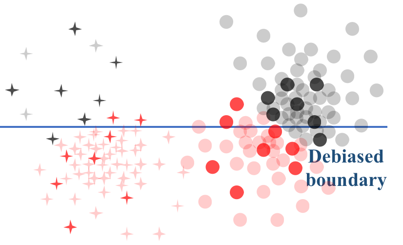

Full list [Google Scholar]. * indicates equal contributions
 |
Secured Weight Release for Large Language Models via Taylor Expansion.
Guanchu Wang*, Yu-Neng Chuang*, Ruixiang Tang, Shaochen Zhong, Jiayi Yuan, Hongye Jin, Zirui Liu, Vipin Chaudhary, Shuai Xu, James Caverlee, Xia Hu
[Summary] [Paper] [Code]
|
 |
Understanding Different Design Choices in Training Large Time Series Models.
Yu-Neng Chuang*, Songchen Li*, Jiayi Yuan*, Guanchu Wang*, Kwei-Herng Lai, Leisheng Yu, Sirui Ding, Chia-Yuan Chang, Qiaoyu Tan, Daochen Zha, Xia Hu
[Summary] [Paper] [Code]
|
 |
KV Cache Compression, But What Must We Give in Return? A Comprehensive Benchmark of Long Context Capable Approaches.
Jiayi Yuan*, Hongyi Liu*, Shaochen Zhong*, Yu-Neng Chuang*, Songchen Li, Guanchu Wang, Duy Le, Hongye Jin, Vipin Chaudhary, Zhaozhuo Xu, Zirui Liu, Xia Hu
[Summary] [Paper] [Code]
|
 |
FaithLM: Towards Faithful Explanations for Large Language Models.
Yu-Neng Chuang, Guanchu Wang, Chia-Yuan Chang, Ruixiang Tang, Shaochen Zhong, Fan Yang, Mengnan Du, Xuanting Cai, and Xia Hu
[Summary] [Paper] [Code]
|
 |
LEMO: Learning Shapley Manifold for Faithful Explanation.
Guanchu Wang, Yu-Neng Chuang, Huiyuan Chen, Yuzhong Chen, Zhimeng Jiang, Mangesh Bendre, Mahashweta Das, Zirui Liu, Jiayi Yuan, and Xia Hu
[Summary] [Paper] [Code]
|
 |
Efficient GNN Explanation via Learning Removal-based Attribution.
Yao Rong, Guanchu Wang, Qizhang Feng, Ninghao Liu, Zirui Liu, Enkelejda Kasneci and Xia Hu
[Summary] [Paper] [Code]
|
 |
TVE: Learning Meta-attribution for Transferable Vision Explainer.
Guanchu Wang, Yu-Neng Chuang, Fan Yang, Mengnan Du, Chia-Yuan Chang, Shaochen Zhong, Zirui Liu, Zhaozhuo Xu, Kaixiong Zhou, Xuanting Cai, and Xia Hu
International Conference on Machine Learning, ICML 2024.
[Summary] [Paper] [Code]
|
 |
Winner-Take-All Column Row Sampling for Memory Efficient Adaptation of Language Model.
Guanchu Wang*, Zirui Liu*, Shaochen Zhong, Zhaozhuo Xu, Daochen Zha, Ruixiang Tang, Zhimeng Jiang, Kaixiong Zhou, Vipin Chaudhary, Shuai Xu and Xia Hu
Neural Information Processing Systems, NeurIPS 2023.
[Summary] [Paper] [Code]
|
|  |
Mitigating Algorithmic Bias with Limited Annotations.
Guanchu Wang, Mengnan Du, Ninghao Liu, Na Zou and Xia Hu
European Conference on Machine Learning and Principles and Practice of Knowledge Discovery in Databases
ECML-PKDD 2023
[Summary] [Paper] [Code]
|
 |
DIVISION: Memory Efficient Training via Dual Activation Precision.
Guanchu Wang, Zirui Liu, Zhimeng Jiang, Ninghao Liu, Na Zou and Xia Hu
International Conference on Machine Learning, ICML 2023.
[Summary] [Paper] [Code]
|
 |
CoRTX: Contrastive Learning for Real-time Explanations.
Guanchu Wang*, Yu-Neng Chuang*, Fan Yang, Quan Zhou, Pushkar Tripathi, Xuanting Cai and Xia Hu
(* Equal contribution) International Conference on Learning Representations, ICLR 2023.
[Summary] [Paper] [Code]
Applied to Meta Ads Transparency [News]
|
| |
BED: A Real-Time Object Detection System for Edge Devices.
Guanchu Wang*, Zaid Pervaiz Bhat∗, Zhimeng Jiang∗, Yi-Wei Chen∗, Daochen Zha∗, Alfredo Costilla Reyes∗, Afshin Niktash, Gorkem Ulkar, Erman Okman, Xuanting Cai, Xia Hu
(* Equal contribution) International Conference on Information and Knowledge Management, CIKM 2022, Demo Track, Best Paper Award.
[Summary] [Video] [Talk] [Paper] [Slide] [Code]
|
 |
Accelerating Shapley Explanation via Contributive Cooperator Selection.
Guanchu Wang*, Yu-Neng Chuang*, Mengnan Du, Fan Yang, Quan Zhou, Pushkar Tripathi, Xuanting Cai and Xia Hu
(* Equal contribution) International Conference on Machine Learning, Spotlight of ICML 2022.
[Summary] [Paper] [Code] [Slide]
Applied to Meta Ads Transparency [Link]
|
 |
TODS: An Automated Time Series Outlier Detection System.
Kwei-Herng Lai*, Daochen Zha*, Guanchu Wang, Junjie Xu, Yue Zhao, Devesh Kumar, Yile Chen, Purav Zumkhawaka, Minyang Wan, Diego Martinez, and Xia Hu
AAAI Conference on Artificial Intelligence, AAAI 2021, Demo Track.
[Summary] [Video][Paper] [Code]
|
 |
Independent Skill Transfer for Deep Reinforcement Learning.
Qiangxing Tian, Guanchu Wang, Jinxin Liu, and Donglin Wang
International Joint Conference on Artificial Intelligence, IJCAI 2020 (Accepted rate 12.6%).
[Summary] [Paper] [Code] [Poster]
|